Технический анализ
История повторяется – это то, с чего мы начинали эту статью, помните? Именно на этой концепции построена тема фигур цены. Эти фигуры повторяются постоянно, и многие из них сигнализируют об одном и том же.
Безусловно, не существует фигуры, что всегда, на 100% укажет на правильное движение цены. Однако, они чрезвычайно полезны в анализе. Если терпеливо их находить, то они продемонстрируют прекрасные результаты.
Все фигуры делятся на:
- фигуры тренда;
- фигуры разворота.
Фигур много и мы рассмотрим лишь важные из них.
Голова и плечи
Это самая популярная фигура в техническом анализе. Ей очень много лет, она описана в тысячах учебников. В первую очередь следует научиться находить именно ее.
Фигура состоит из головы – максимального значения цены – и двух “плечей”, они же промежуточные пики. Схема:
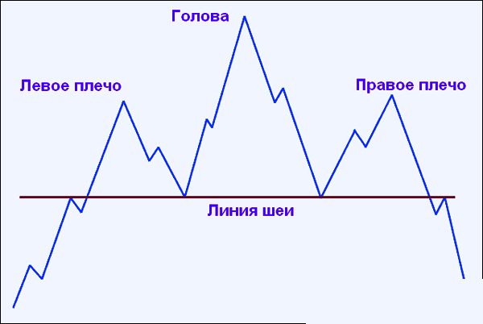
В реальности цена не будет такой красивой, как на схеме, поэтому достаточно просто ориентироваться на пиковые значения, чтобы определить плечи и голову.
Плечи могут быть разного размера, это не страшно. Основное – голова должна быть выше плечей.
Для фигуры нужно провести так называемую “линию шеи”. Как только цена выходит за эту линию – начинается разворот тренда.
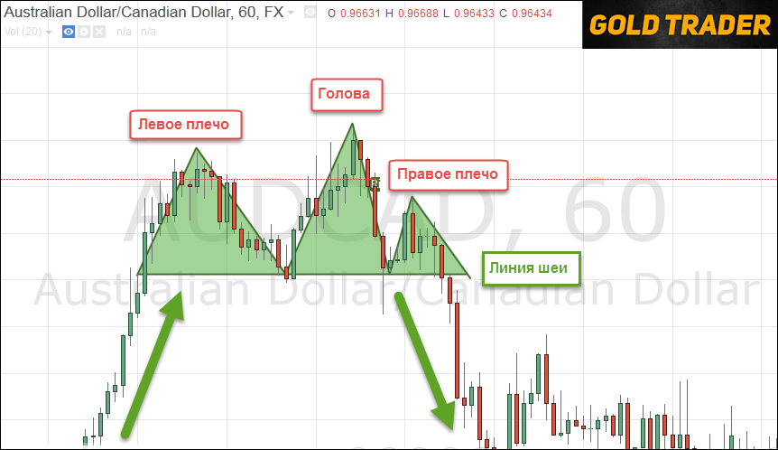
Кстати на живом графике для рисования головы и плечей есть специальный инструмент Head & Shoulders (как известный шампунь). Именно так они и рисовались на примерах:
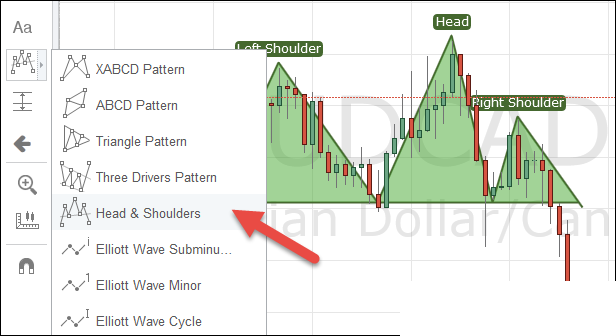
Голова и плечи – основная фигура разворота, которой очень много лет. Ее знать нужно обязательно.
Фигура “Чашка”
Кофейная чашка с ручкой, встречается достаточно часто. Супер-точность в ее рисовании не требуется, мы тут не художники. Главное уловить форму движения цены, рисуя линию по правилам линий тренда.
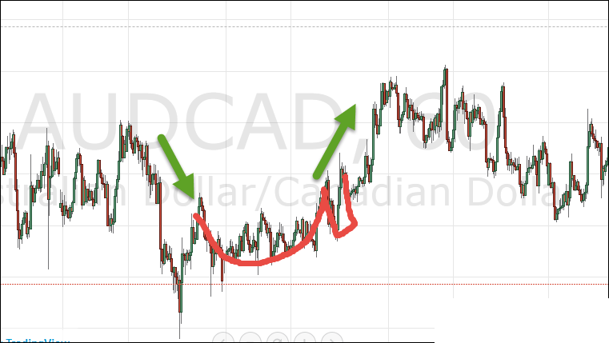
Двойная вершина: обычная и перевернутая
Очень популярная фигура, указывающая на разворот тренда. Как и “голова и плечи”, считается одной из наиболее надежных.
Формируется, когда цена дважды пытается пробить линию поддержки или сопротивления, после чего оптимизм иссякает и цена разворачивается.
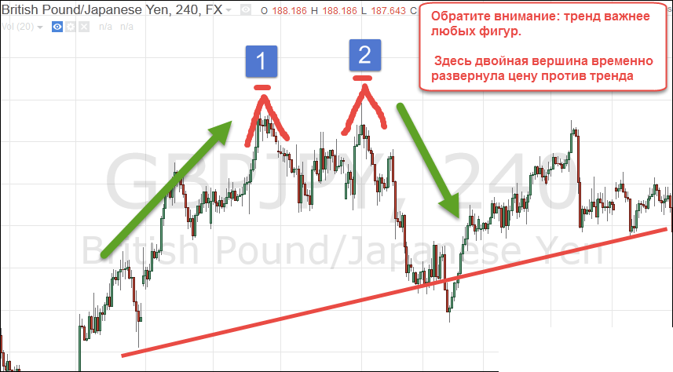
Перевернутая двойная вершина:
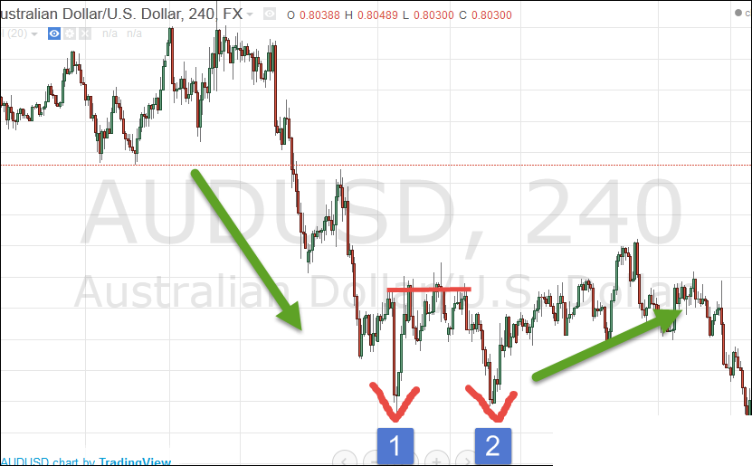
Треугольник
Это также одна из основных фигур технического анализа, что приносит денежки трейдерам уже более 100 лет. Треугольники бывают трех типов:
- симметричные;
- восходящие;
- нисходящие.
По факту, треугольник состоит из линий тренда. В симметричном треугольнике обе линии тренда равноценно сходятся в одной точке.
В двух других случаях одна из линий будет горизонтальной и выступать в качестве линии поддержки или сопротивления.
Симметричный треугольник
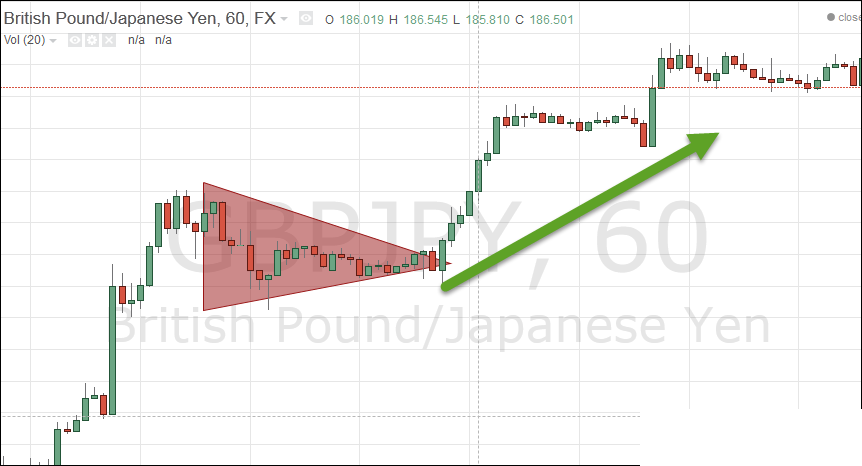
Нисходящий треугольник
Прорыв вверх, по тренду:
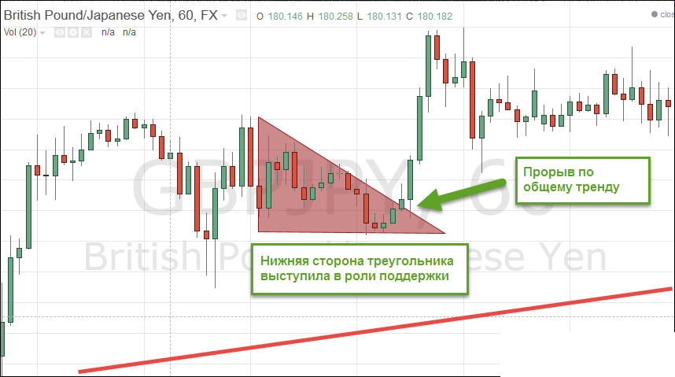
Восходящий треугольник
Верхняя сторона треугольника работает как сопротивление:
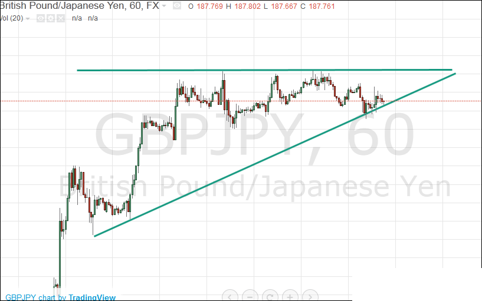
Фигура “Флаг”
Достаточно часто встречающиеся фигуры. Флаг состоит из наклонного канала с “ручкой”:
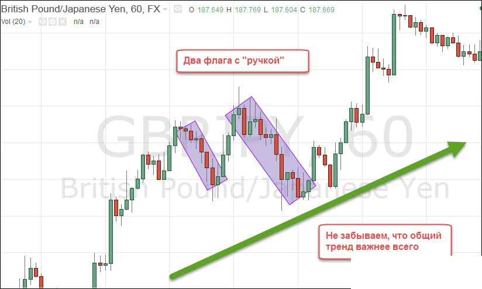
Фигура “Вымпел”
Вымпел же можно представить, как треугольник с “ручкой”. Пробой вымпела по тренду:
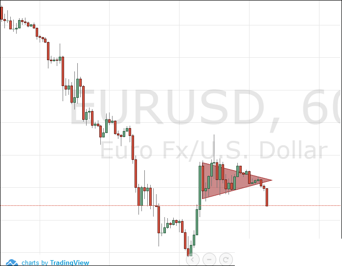
Фигура “Клин”
Как известно, клин клином вышибают. Фигура напоминает симметрический вытянутый треугольник, направленный в определенном направлении вверх или вниз. Клин может как подтвердить тренд, так и опровергнуть его.
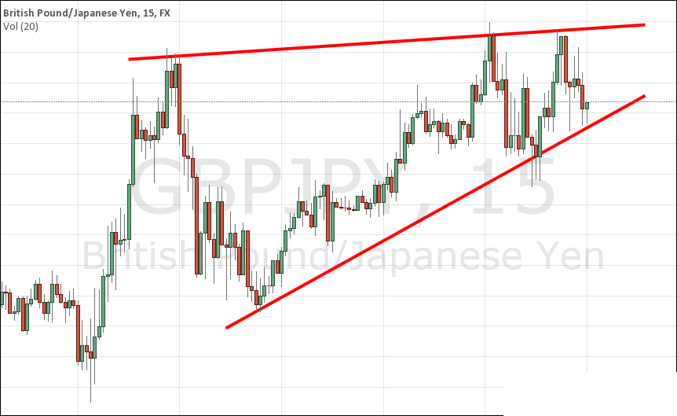
Как правило, если цена выходит за верхнюю его линию, то речь идет по подтверждении тренда, если за нижнюю – об его развороте. Не забывайте, естественно, оценивать ситуацию на старших фреймах.
Тройная вершина или дно
Еще один пример разворотной фигуры. Здесь нет явных голов и плечей, зато есть четкие три нижних зоны, где цена отскакивала от линии поддержки.
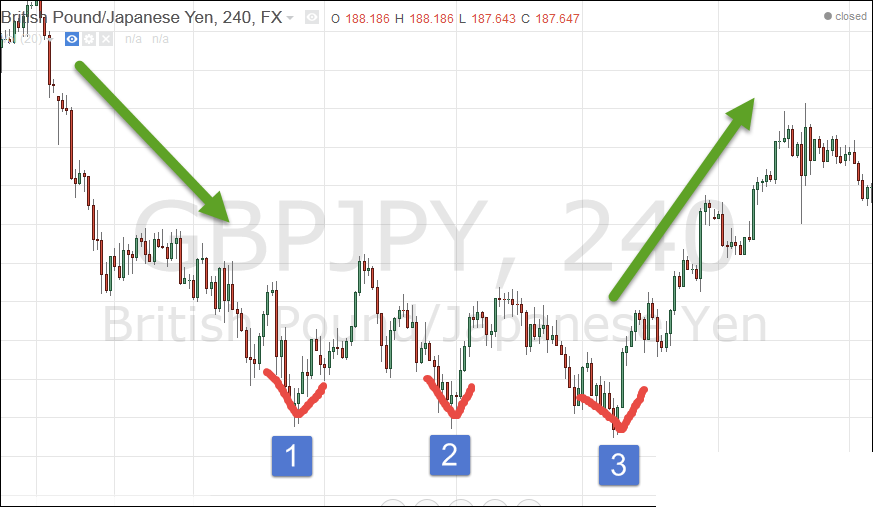
Как правило, после такого тройного отскока стоит ждать разворот тренда.
Фигура “блюдце”
Напоминает чашку, просто без ручки или же ручка будет иной формы. Обычно такие фигуры свидетельствуют о долгосрочном развороте цены и хорошо себя показывают на старших таймфреймах – от 1 часа.
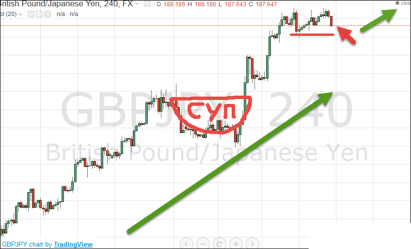
Мы рассмотрели некоторые из самых популярных фигур. Их значительно больше – но статья не резиновая.
Гэп
Гэп – это такое пустое пространство между свечами. Появляется он между торговыми периодами, в том числе, между пятницей и понедельником. Другой вариант – из-за чрезмерной разницы в цене между двумя торговыми периодами (актуально для акций). Также гэпы появляются и при очень сильном “скачке” цены.
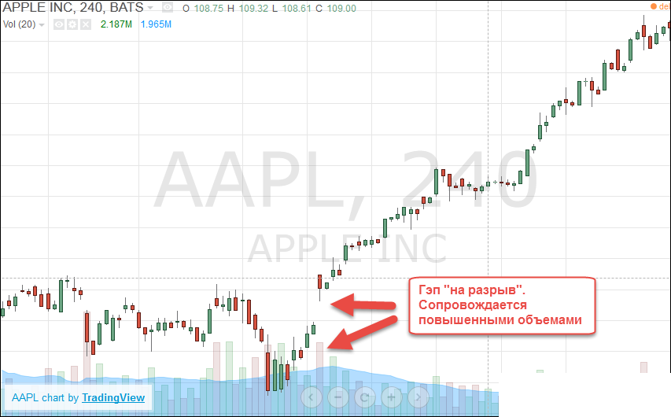
Всего есть три вида гэпов:
- на разрыв (сопровождается повышенными объемами);
- на отрыв (в очень сильном тренде);
- на излет (незадолго до разворота цены).
Торговля по гэпам – это еще один подраздел технического анализа, так что я подробнее его опишу в отдельной статье (эта и так конских размеров).
В любом случае, гэпы нужны, в первую очередь, для форекса и рынка акций, в бинарных опционах с ними работают достаточно редко.
Скользящие средние
Цена редко движется равномерно. Обычно это волнообразное, а порой и вовсе хаотическое движение, в котором порой сложно найти тренд. Чтобы справиться с этой проблемой, используются скользящие средние (moving averages).
Это, по сути, просто средний уровень цены за определенный промежуток времени, такая себе “средняя температура по больнице”. Благодаря скользящим, хаос превращается в сглаженное упорядоченное движение, и тренд вот он, сразу как на ладони.
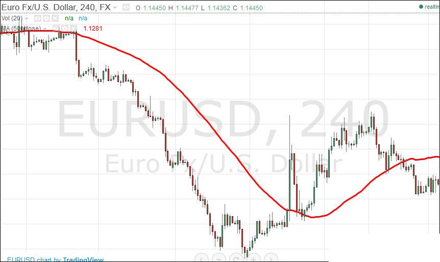
Виды скользящих средних
Есть несколько разновидностей скользящих средних, основные:
- MA (Moving Average) – скользящая средняя;
- SMA (Simple Moving Average) – простая скользящая средняя;
- WMA (Weighted Moving Average) – взвешенная скользящая средняя;
- EMA (Exponential Moving Average ) – экспоненциальная скользящая средняя.
И так далее. На самом деле, их много, и в разных стратегиях вы обычно увидите упоминание, какой именно тип скользящей нужно использовать.
Однако, можно не напрягаться. Различия между ними не столь ярко выражены. Вот три скользящих с живого графика. Как видим, небо на землю не обрушилось:
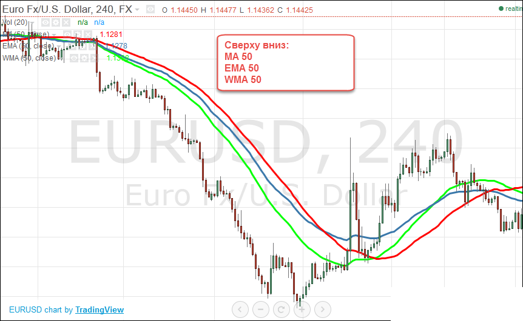
По факту, одни скользящие просто немножко быстрее других, скажем EMA быстрее SMA, попросту менее сглаженная. Так что на коротких экспирациях можно выбирать более быстрые скользящие, на длинных – медленные.
Для особых изощренцев у TradingView есть индикатор CM_Ultimate_MA_MTF_V2, в котором используется сразу 8 скользящих средних:
- SMA (Simple Moving Average).
- EMA (Exponential Moving Average).
- WMA (Weighted Moving Average).
- HullMA (Hull Moving Average).
- VWMA (Volume Weighted Moving Average).
- RMA (Moving Average в RSI).
- TEMA (Triple Exponential Moving Average).
- Tilson T3 (Tilson T3 Moving Average).
Но лучше особо не увлекаться, перебирая их разновидности.
Использование скользящих средних
Скользящие средние используются для определения трех ключевых ситуаций:
- тренда;
- разворота тренда;
- уровней поддержки и сопротивления.
Именно скользящая позволяет быстро понять, что происходит с активом, растет ли он или падает. Скажем, устанавливаем MA 42 и 4-часовой график приобретает совсем иные очертания.
В данном случае скользящая средняя MA 42 несколько месяцев работала как надежная линия сопротивления для EUR/USD. Ну а когда свечи пересекли линию – тренд завершен.
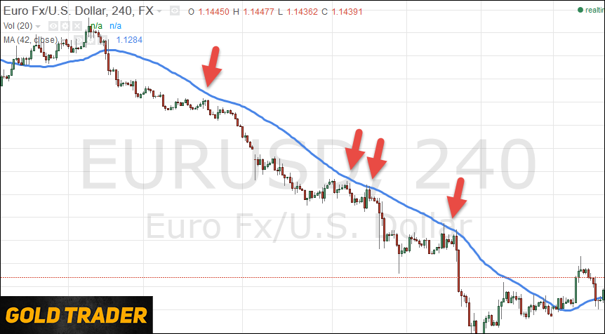
Еще один метод определения тренда – это парные скользящие, одна краткосрочная, другая долгосрочная. Скажем, если MA 5 расположена над MA 25 – тренд идет вверх. И наоборот:
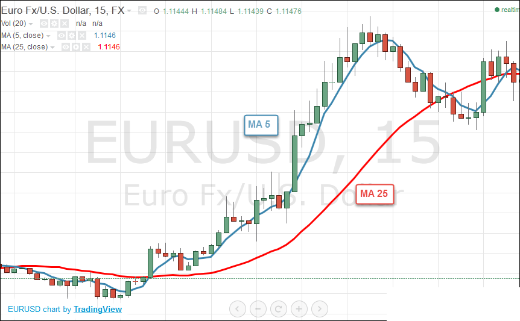
Разворот цены скользящие определяют двумя способами:
- когда свечи/бары проходят через скользящую;
- когда скользящие пересекаются.
Скажем, после того, как свечи пересекли MA 50 на 1-часовом ТФ, началось ее падение:
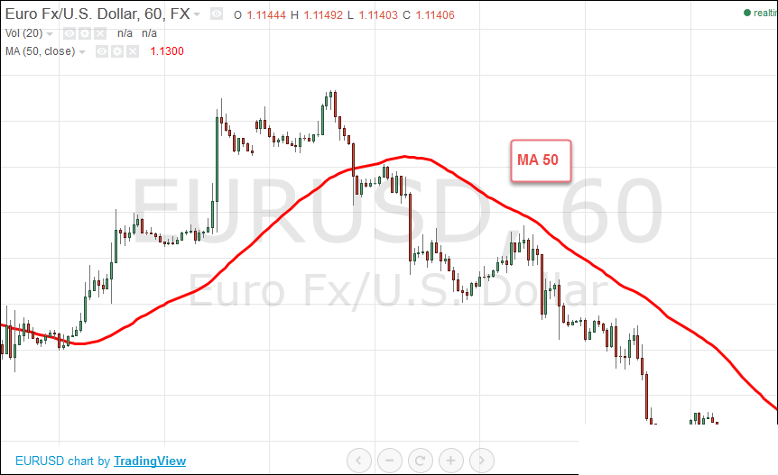
Ну и конечно же самое популярное применение, о котором вы должны уже знать – это пересечение скользящих средних. Оно используется в массе разнообразных стратегий.
Например, пересечение МА 15 и 50, плюс уже знакомые нам разворотные марибозу.
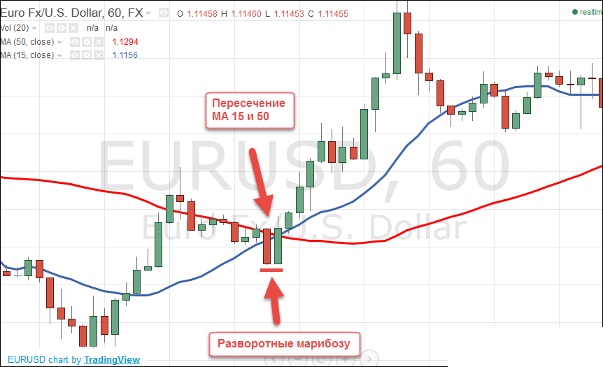
При этом пересечение скользящих с достаточно малыми значениями, вроде 15 и 35, может говорить о коротком развороте тренда. А вот когда пересекаются мощные МА вроде 50 и 200, тут уже пахнет серьезным.
Разумеется во флете – когда малая волатильность – на пересечения ориентироваться не нужно.
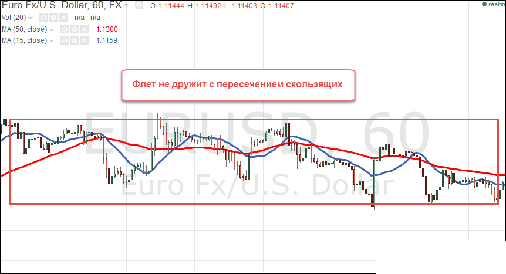
Какие скользящие средние использовать?
Есть огромное количество стратегий с ними.
Часто они подбираются вручную. Меняйте значения, пока скользящая не станет поддержкой или сопротивлением, либо не покажет нужную вам картину. Также можно взять универсальный вариант “долгоиграющий” вариант, вроде МА 100 или 200.
Скользящие средние – очень популярный технический инструмент, который можно найти на любом профессиональном графике. Поэтому его использование, фактически, обязательно.
Индикаторы
Как видите, индикаторы я описываю в самом конце. Почему? Потому что здесь им самое место. Новички все делают наоборот: вместо изучения линий поддержки/сопротивления и основ технического анализа, они с бешеным взглядом набрасывают на график кучу индикаторов и получают вот такую “красоту”:
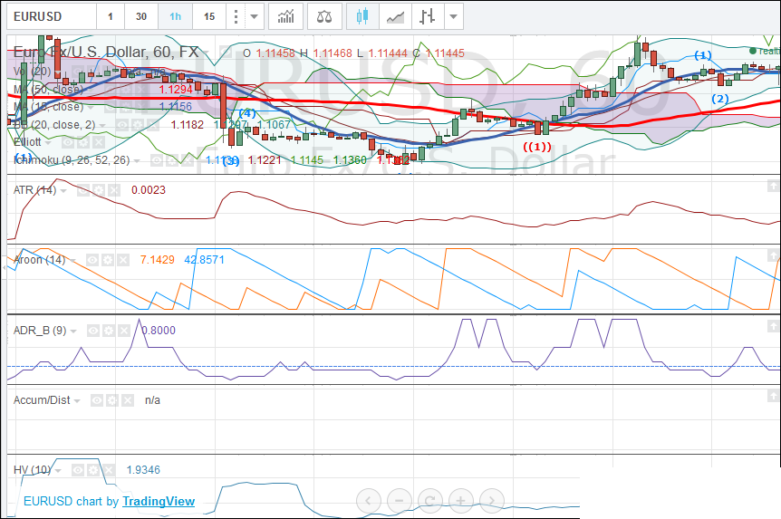
Индикаторы на самом деле полезный вспомогательный инструмент, не более того. Они помогают увидеть движение цены и ее волатильность в самых различных ракурсах. Задач у любого индикатора две:
- подтвердить тренд;
- подтвердить фигуру/модель разворота.
Все индикаторы, представленные на живом графике или в любом терминале, являются запаздывающими. Это означает, что индикатор ничего не предсказывает, всегда следует за ценой и просто отображает прошлое.
Одни из самых популярных индикаторов – это осцилляторы.
Осцилляторные индикаторы
Это одни из самых востребованных разновидностей индикаторов. Они отображаются в условной шкале, обычно от 0 до 100.
При этом
- чем ближе значение к 100 – тем больше актив перекуплен (ожидается падение);
- чем ближе к 0 – перепродан (ожидается подъем).
Пересечения и дивергенции
Это еще одни сигналы, которые часто дают индикаторы. Ранее мы уже говорили о пересечении скользящих средних. Аналогичное актуально и для других индикаторов, вроде ADX.
Пересечение ADX подтверждает разворот тренда:
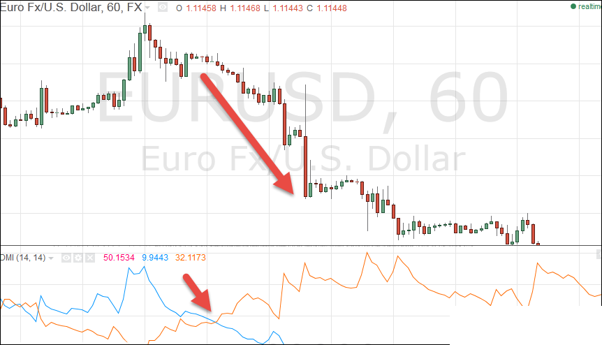
Дивергенция – еще одно популярное условие у многих осцилляторов, когда направление индикатора и цены расходится, что свидетельствует о скором изменении тренда.
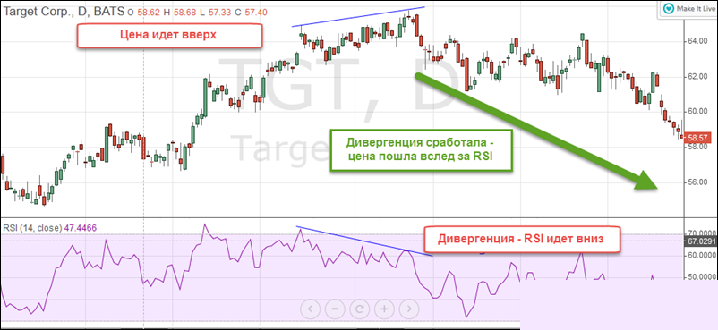
Индикаторы дают немало полезной информации. Они помогают вычислить силу движения цены, направление тренда, волатильность и множество других показателей.
Как правило, профессиональные трейдеры используют, от силы, 1-2 индикатора, но отточенных до совершенства.
Торговать просто по индикатору, тем не менее, нельзя, поскольку это всего лишь математическая абстракция, осуществляемая с живой материей – ценой. Поэтому любые индикаторы применяются совместно с техническим анализом, свечными моделями, а порой и с другими индикаторами.
Популярные индикаторы
Рассмотрим несколько популярных индикаторов, которые часто используются профессионалами в техническом анализе.
Accumulation/Distribution (A/D)
Один из самых популярных индикаторов объема, в котором движение цены сравнивается с объемом торгов за этот же период.
Сия радость доступна только для акций и индексов, поэтому не пытайтесь ее использовать с валютными парами. Увы, для валют нет достоверных данных по объемам, что вы хотите – нерегулируемый межбанк.
А вот для акций A/D используется часто и встречается в массе разнообразных стратегий.
A/D используется для определения трендов. Если линия A/D стремится вверх, это указание на то, что сила покупателей становится больше. На самом же пике A/D стоит ожидать разворота цены после периода консолидации.
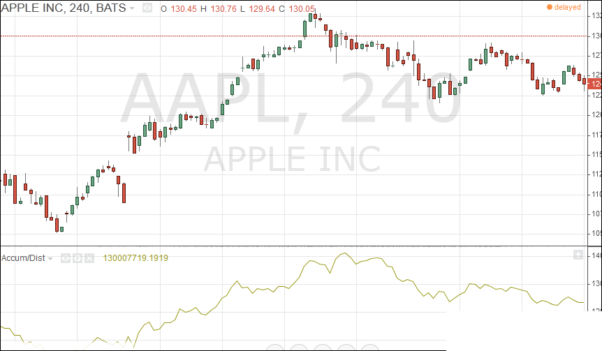
Average Directional Index (ADX)
Индикатор для определения силы тренда. Он указывает не его направление, а то, насколько текущий тренд силен.
На живом графике ADX называется Directional Movement. Он состоит из нескольких линий:
- индикатор позитивного направления +DI;
- индикатор негативного направления –DI.
Плюсовой показывает силу восходящего тренда, минусовой – нисходящего. Данные отображаются рядом с линией ADX на шкале между 0 и 100.
Понять суть можно, естественно, на тренде. Вот как здесь. Устойчивый нисходящий тренд, -DI после пересечения выше 40, +DI ниже 20, линия ADX стремится вверх, указывая на усиление тренда вниз.
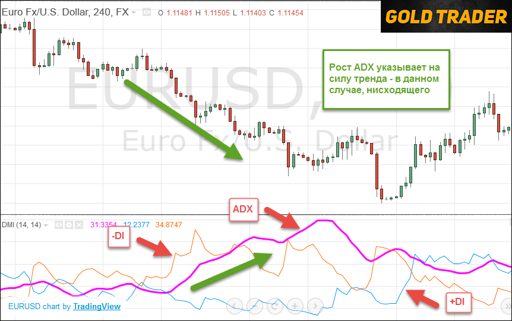
Aroon
Это относительно новый индикатор, созданный в 1995 году (большинство разработаны еще в 70-х годах). Индикатор трендовый, его задача – показать наличие исходящего или восходящего тренда, а равно как его силы.
Также Aroon используют для определения нового тренда. Индикатор состоит из двух линий, красной и синей.
Синяя линия отображает период времени, прошедший с момента, как за указанный промежуток времени цена достигла максимального значения. Красная, соответственно, все наоборот. При этом промежуток времени изменяется в зависимости от выбранного таймфрейма.
Классический пример использования Aroon – это разворот тренда. После долгого периода, когда синяя была вверху, а красная – внизу, происходит их пересечение и начинается смена тренда. Например:
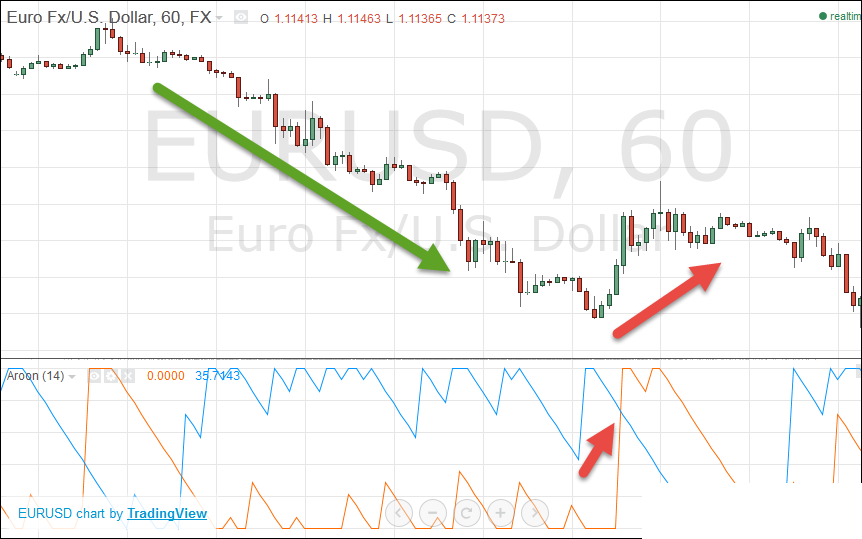
MACD
Один из самых известных индикаторов в техническом анализе, который я подробно описал вот здесь:
Используя силу скользящих средних, MACD применяют, как правило, на пересечениях:
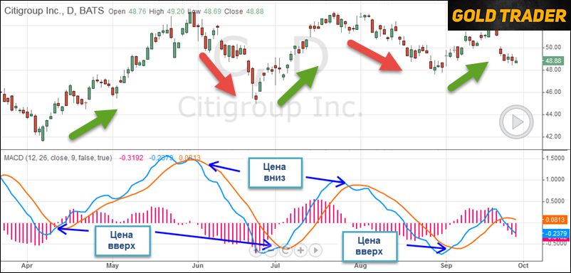
RSI
Также очень популярный индикатор силы тренда, описанный здесь:
Используется при перекупленности и перепроданности:
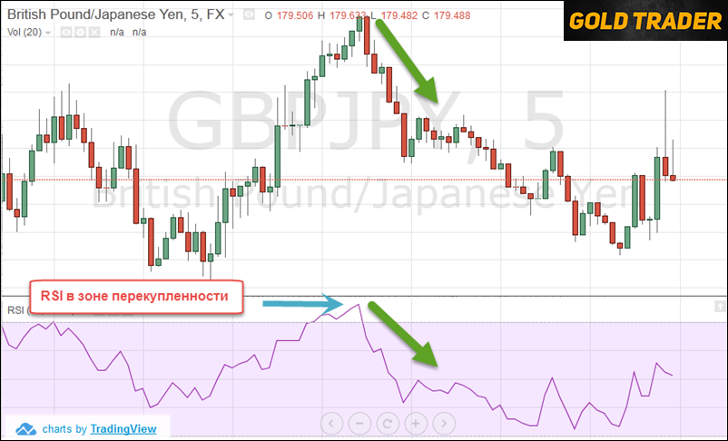
On Balance Volume (OBV)
Еще один известный технический индикатор для акций и индексов, его можно считать трендовым. Очень простой и наглядный.
Работает он просто, берется общий объем за торговый период и назначается позитивное или негативное значение в зависимости от движения цены за этот период.
Когда цена вверх, объему назначается позитивное значение, вниз – негативное. Затем общее позитивное или негативное значение добавляется к сумме, полученной от начала измерения.
В OBV главное не его значение – а тренд самой его линии. Если он демонстрирует устойчивый рост, его же стоит ожидать и от цены. Если же линия индикатора уныло скучает без четкого направления, аналогичное происходит и с ценой.
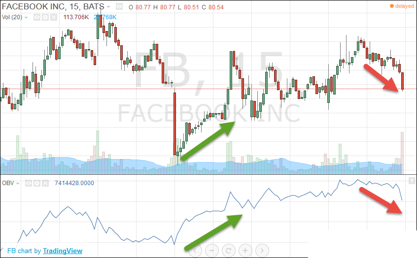
Стохастик
Это, наверное, вообще самый популярный осциллятор в мире. И, так уж получилось, что очень мне близкий и понятный, поэтому его и видно на моих скринах частенько. Описан здесь:
В целом, это индикатор моментума – силы движения цены. В сильном тренде цена приближается к своему торговому “потолку”, что намекает на последующий разворот.
Поэтому основное, на что смотрят в стохастике – это зоны перекупленности и перепроданности. Это мой любимый индикатор, дополняющий фундамент технического анализа.
Он также весьма хорош в дивергенции, например:
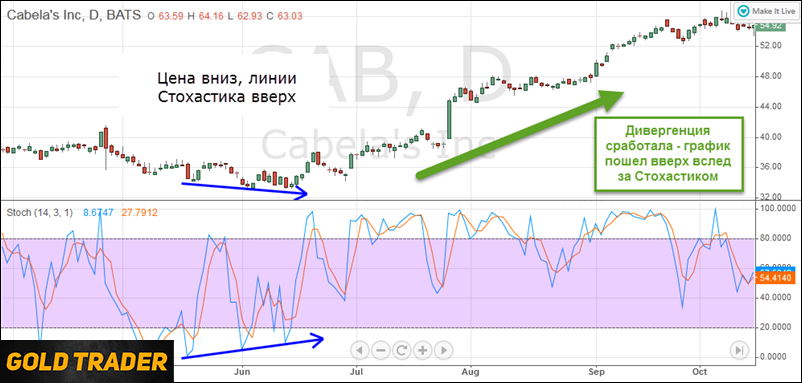
Технический анализ: итоги
Розовые пони какают бабочками. Шутка. Это была проверка, дочитали ли вы статью до конца (небось просто промотали). Давайте кратко подытожим, что же такое технический анализ.
- В цене заложены все факторы, она движется в трендах, а история повторяется.
- В цене есть все, что нужно знать.
- Технический анализ надо сочетать с фундаментальным.
- Цена движется в трендах: восходящем и нисходящем, либо находится в боковом движении (консолидации).
- Линия тренда – самый простой инструмент технического анализа.
- Канал – это две линии тренда, что выступают как поддержка и сопротивление.
- Поддержка удерживает цену от падения, сопротивление – от роста.
- Объем – это количество торгуемых акций или контрактов. Чем больше объем – тем сильнее тренд.
- В форексе (валютных парах) нормального объема нет.
- Есть три основных типа графиков: свечной, линейный и бары.
- Для бинарных опционов используют таймфреймы до 1 дня, для форекса и акций – вплоть до года.
- Фигуры технического анализа помогают найти разворот цены.
- Голова и плечи – главная фигура разворота цены.
- Чашка, двойная/тройная вершина, треугольники, флаги и вымпелы – примеры других фигур.
- Гэп – разрыв между торговыми периодами или при резком движении цены.
- Скользящая средняя помогает определить тренды и сгладить рыночный шум.
- Индикаторы основаны на формуле, в которой учитывается движение цены и ее объем.
- Популярные индикаторы это A/D, Aroon, ADX, MACD, OBV, Стохастик, RSI.
- Как видите, технический анализ – весьма объемная тема. Его изучают месяцами и годами. Но – это не должно быть для вас теоретической дисциплиной. Да, в научных кругах теханализ терзают по научному, а в журналах вроде Stock and Commodities вы увидите такие примеры теханализа, что после них не заснете, но для нас с вами — это самая реальная, самая практическая вещь на свете.
Маленький секрет
Основное, что я хочу вам посоветовать – избегайте ошибки новичка, который набрасывает на график по 10 индикаторов и пытается так что-то прогнозировать. Рынок – это живой механизм, он есть ничто иное, как реакция его участников. На графиках мы видим рыночный баланс спроса и предложения. Индикаторы — обычные математические формулы, очень простые. Предсказать глобальный рынок они не могут. Поэтому, чтобы добиться успеха, нужно грамотно использовать весь арсенал средств: от новостей, свечей, линий тренда и п/с до фигур разворота, прайс экшн и определенных индикаторов.
И маленький секрет из будущего. Вы пройдете долгий, сложный путь. Перепробуете десятки индикаторов и свечных комбинаций, пока до вас не дойдет, что все они, в сущности, равноценны. И важны не они – а вы сами и ваша трейдерская психология. Вот почему два трейдера могут поставить одну и ту же скользящую на один график, а затем один даст верный прогноз, а второй – нет.
Спустя какое-то время, когда от знаний лопается голова, вы неизбежно сделаете главное – выбросите все из головы и начнете воспринимать график свежим взглядом. И тогда случится маленькое чудо – вы совершенно новыми глазами увидите старые добрые инструменты. Линии тренда, фигуры разворотов, скользящие, свечные модели вдруг предстанут перед вами в совершенно ином свете. Месяцы опыта и тысячи сделок превратят их в нечто удивительное, чего вы в упор не видели, когда начинали.
Трейдинг – это волшебство. Во всех аспектах. Возможность работать в любой точки планеты с ноутбуком на коленях, способность заработать за час больше, чем вы зарабатывали за месяц, просиживая штаны на прошлой работе. Так станьте же волшебником – и взмахните своей волшебной палочкой технического анализа, чтобы этот безграничный резервуар финансовых возможностей поделился с вами капелькой живительной влаги. На этом художественном финале я удаляюсь в закат *играет позитивная музыка*.
Остались вопросы? Напиши мне лично — Влад
Читать дальше Риск-менеджмент — Как торговать без потерь →